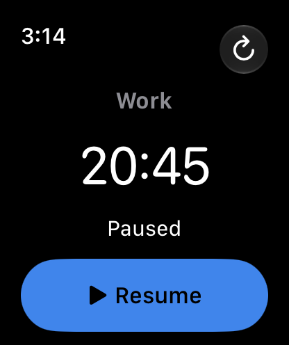
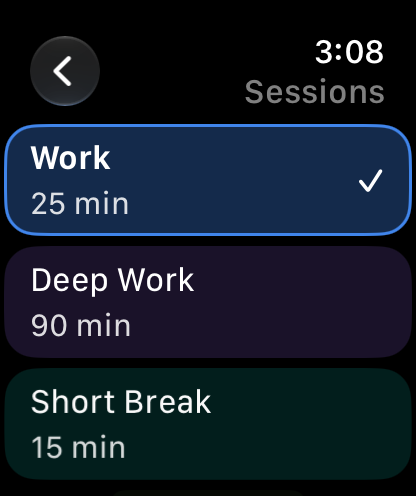

01 / FOCUS
Keep time in view.

Check the remaining time.
Pause or end when you need to.
The essentials on your wrist. Your iPhone keeps the history.
Check the remaining time.
Pause or end when you need to.

Pick up where you left off.
Paused time stays out of history.

Your iPhone presets, on your wrist.
Choose one when you're ready.